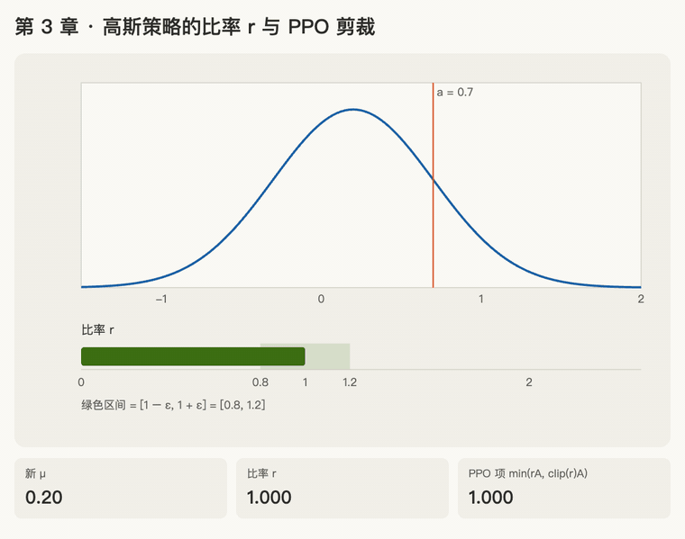

第 3 章 · 运控里的 PPO 配方：高斯策略、几千个环境、按 KL 调学习率
本章回答：PPO 用在连续动作的机器人上，策略长什么样？比率 r 怎么从高斯分布算出来？「4096 个环境 × 24 步」这类超参是什么意思？为什么学习率要跟着 KL 自动调？
讲解日期：2026-11-20 · 上一章：第 2 章 把动作跟踪写成 MDP · 下一章：第 4 章 从仿真到真机
对应原文：PPO 论文式 7（papers/ppo-1707.06347.txtL142）；legged_gym 超参表与自适应学习率（papers/legged-gym-2109.11978.txtL652–L680，表 3、Algorithm 1）；BeyondMimic 超参表（papers/beyondmimic-2508.08241.txtL2255–L2275）
本章缩写：PPO = Proximal Policy Optimization（近端 / 策略 / 优化）；GAE = Generalized Advantage Estimation（广义 / 优势 / 估计）；KL = Kullback–Leibler divergence（两位统计学家的姓 / 散度）；μ、σ：高斯分布的均值和标准差（读 "mu"、"sigma"）；ε：PPO 的剪裁范围（读 "epsilon"，常取 0.2）；lr = learning rate（学习率）；GPU = Graphics Processing Unit（图形 / 处理 / 单元）。全部缩写见 附录 · 缩写与术语表
讲解
第一步：连续动作用高斯策略（2026-11-20）
类比：投飞镖。 你瞄准一个点（均值 μ），手会抖（标准差 σ），飞镖落在瞄准点附近。练得越好，抖得越小。
《从零学强化学习》第 20–23 章讲的是离散动作（softmax 选一个）。机器人关节设定值是连续的数，所以策略输出一个高斯分布：网络算出 μ（29 维），σ 是一组单独学的参数（不随状态变），动作从 \(\mathcal N(\mu, \sigma^2)\) 里抽。
PPO 要用 \(\log \pi(a)\)，一维高斯的 log 概率是
多维时各维独立，直接相加。
例子：μ = 0.2，σ = 0.5，抽到 a = 0.7：
| 项 | 算式 | 结果 |
|---|---|---|
| 平方项 | −(0.5)² / (2 × 0.25) | −0.5 |
| −log σ | −log 0.5 | +0.693 |
| 常数 | −½ log(2π) | −0.919 |
| 合计 | −0.726 |
一句话：连续动作 = 瞄准 μ、手抖 σ；log 概率就是这三项之和。
第二步：比率和剪裁，换成高斯版（2026-11-20）
第 23 章的比率 \(r = \pi_{新}(a)/\pi_{旧}(a)\)，用 log 概率算更稳：\(r = \exp(\log\pi_{新} - \log\pi_{旧})\)。
例子（同一个 a = 0.7，σ 不变）：
| 新 μ | r | A = +1 时 PPO 项 \(\min(rA, \text{clip}(r)A)\) |
|---|---|---|
| 0.3 | 1.197 | 1.197（在 [0.8, 1.2] 里，不剪） |
| 0.45 | 1.455 | 1.200（被剪到 1 + ε） |
μ 往 a 的方向挪，r 变大；挪太多（超过 1.2）就被剪平，这一批数据不再推它往前走（第 23 章第四步）。
一句话：高斯策略的比率用 log 概率相减再 exp，剪裁规则和第 23 章一模一样。
第三步：几千个环境一起跑：批量账（2026-11-20）
类比：一个老师同时批 4096 份作业。 每份写 24 题，收上来一大摞，分 4 叠，每叠看 5 遍。
GPU 仿真器（Isaac Gym、MuJoCo Warp）能同时跑几千个机器人。legged_gym 的配方（原文表 3，L654–L657）：
| 超参 | 值 | 意思 |
|---|---|---|
| 并行环境 × 每环境步数 | 4096 × 24 = 98304 | 一次迭代采这么多样本 |
| mini-batch | 98304 / 4 = 24576 | 每次梯度用的样本数 |
| epochs | 5 | 同一批数据过几遍 |
| 每次迭代的梯度步 | 4 × 5 = 20 | |
| clip ε / γ / GAE λ | 0.2 / 0.99 / 0.95 | 第 22–23 章的老朋友 |
legged_gym 发现 mini-batch 要比常规建议大得多，「几万」才好（L152–L154）。BeyondMimic 的表几乎一样（24 步、5 epochs、4 mini-batch、ε = 0.2、熵系数 0.005）。
为什么 on-policy 的 PPO 在机器人上反而最流行？采样在 GPU 上几乎免费，PPO 样本效率低的缺点被并行抵消了；它稳、好调、对超参不敏感。legged_gym 用 4096 只机器狗，不到 20 分钟、1500 次更新训出能在崎岖地形上走的四足策略（L340–L341）。
一句话：4096 × 24 一批、切 4 份、看 5 遍、每轮 20 步梯度；并行把 PPO 的低样本效率抵消掉了。
第四步：按 KL 自动调学习率（2026-11-20）
类比：开车看转速表。 转速太高就松油门，太低就踩一点，保持在一个舒服的区间。
每次更新后算新旧策略的 KL（第 23 章第三步：两个分布差多远），目标 \(KL^* = 0.01\)。legged_gym Algorithm 1（L672–L680）：
- KL > 2 × 0.01：学习率 ÷ 1.5（步子太大，收一收），下限 1e-5；
- KL < 0.5 × 0.01：学习率 × 1.5（步子太小，放一放），上限 1e-2；
- 中间：不动。
例子（当前 lr = 1e-3）：
| KL | 0.03 | 0.01 | 0.004 |
|---|---|---|---|
| 新 lr | 6.67e-4 | 1e-3 | 1.5e-3 |
这和 PPO 的剪裁是两道保险：剪裁在一批数据内防止某个样本推太远；KL 调学习率在迭代之间把整体步子维持在信任区域附近。
一句话：KL 太大就降学习率、太小就升，让每次更新的步子稳定在 0.01 左右。
动画演示：高斯策略的比率与剪裁

可交互版：animations/03-gauss-ratio.html（滑块：新 μ、σ、样本 a、优势 A 的正负）。
怎么看：
- 灰色钟形是旧策略，蓝色是新策略，竖线是抽到的动作 a（第一步）。
- 两条曲线在 a 处的高度之比就是 r，下方条形图显示 r 和 [0.8, 1.2] 的剪裁区间（第二步）。
- 把新 μ 往 a 拖：r 变大，超过 1.2 后 PPO 项变平（A > 0 时）。把 A 切成负的，看剪裁在另一侧起作用。
练习与作答记录
题 1（第一步）：μ = 0，σ = 1，a = 1。算 log π(a)。如果 σ 变成 0.5 呢？σ 变小时，离 μ 远的动作的 log 概率怎么变？
作答：（待作答）
题 2（第三步）：用 2048 个环境、每环境 32 步、8 个 mini-batch、4 epochs。一次迭代多少样本？每个 mini-batch 多大？做多少步梯度？
作答：（待作答）
题 3（第四步）：lr = 2e-3，连续三次更新的 KL 是 0.025、0.025、0.003。按 Algorithm 1 写出每次之后的 lr。
作答：（待作答）
口诀
连续动作投飞镖：瞄准 μ、手抖 σ，log 概率三项加；
比率 log 相减再 exp，过了一点二就剪平；
四千个环境二十四步，切四份看五遍；
KL 超两倍降一点五，低一半升一点五。
本章复习卡片
M05（高斯策略 log 概率与比率）、M06（运控 PPO 批量账与按 KL 调学习率）
附录 · 延伸阅读
留给以后深入学习用，不影响本章主线。★ 是建议先读的。
推荐阅读
| 读什么 | 读哪里 | 读它为了什么 |
|---|---|---|
| ★ legged_gym | papers/legged-gym-2109.11978.txt L152–L154（大 mini-batch）、L652–L680（表 3、Algorithm 1） |
大规模并行 PPO 的原始配方 |
| ★ PPO 37 个实现细节 | cs285-deep-rl/materials/blog/ppo-37-implementation-details.html 连续动作部分 |
状态无关 log σ、观测归一化、advantage 归一化等坑 |
| PPO 论文 | papers/ppo-1707.06347.txt L142（式 7） |
剪裁目标原文 |
| BeyondMimic 超参表 | papers/beyondmimic-2508.08241.txt L2255–L2275 |
人形跟踪用的 PPO 超参 |
| CleanRL | cs285-deep-rl/materials/cleanrl/cleanrl/ppo_continuous_action.py |
单文件实现，逐行对照 |
| 《从零学强化学习》第 22–23 章 | cs285-deep-rl/notes/lessons/ |
GAE、比率、剪裁的推导 |
数学原理
- 高斯密度：\(\mathcal N(a;\mu,\sigma^2) = \frac{1}{\sqrt{2\pi}\sigma}e^{-(a-\mu)^2/(2\sigma^2)}\)，取 log 就是第一步的三项。
- 独立多维：各维独立时联合密度是乘积，log 后变成求和。
公式清单
| 公式 | 意思 |
|---|---|
| \(\log\pi(a) = -\frac{(a-\mu)^2}{2\sigma^2} - \log\sigma - \frac12\log 2\pi\) | 一维高斯 log 概率 |
| \(r = \exp(\log\pi_{新} - \log\pi_{旧})\) | 比率 |
| \(L = \min(rA,\ \text{clip}(r, 1-\varepsilon, 1+\varepsilon)A)\) | PPO 剪裁目标 |
| 样本数 = 环境数 × 步数；梯度步 = mini-batch 数 × epochs | 批量账 |
代码对照：把本章的数字用代码算一遍
用 Python + NumPy 把讲义里讲过的数算一遍，不算练习题。代码在仓库本地
robot-motion-rl/solutions/chapter-code/ch03_ppo_recipe.py，配套测试tests/test_ch01_06.py，notebook 在notebooks/ch03_ppo_recipe.ipynb。Mac 上直接能跑，不需要 GPU：
bash cd robot-motion-rl/solutions/chapter-code uv run python ch03_ppo_recipe.py uv run pytest tests/test_ch01_06.py
讲义 ↔ 代码（μ、σ、a 是编的，批量和 KL 规则取自 legged_gym）：
| 讲义 | 公式 | 写法 | 跑出来 |
|---|---|---|---|
| 第一步 log 概率 | 三项之和 | gauss_logp(0.7, 0.2, 0.5) |
−0.726 |
| 第二步 比率 | exp(log 差) | ratio(0.7, 0.3, 0.2, 0.5) |
1.197；μ = 0.45 时 1.455，剪成 1.200 |
| 第三步 批量账 | 4096 × 24 | batch_accounting() |
(98304, 24576, 20) |
| 第四步 调学习率 | Algorithm 1 | adaptive_lr(1e-3, kl) |
6.67e-4、1e-3、1.5e-3 |
关键几行：
logp = -((a - mu) ** 2) / (2 * sigma**2) - np.log(sigma) - 0.5 * np.log(2 * np.pi)
r = np.exp(logp_new - logp_old) # 比率用 log 相减再 exp，数值更稳
term = min(r * adv, np.clip(r, 1 - eps, 1 + eps) * adv)
if kl > 2 * kl_target: lr = max(lr / 1.5, 1e-5) # 步子太大，收
elif kl < kl_target / 2: lr = min(lr * 1.5, 1e-2) # 步子太小，放
代码里才看得到的 2 件事：
- σ 不变时，log 概率的后两项（−log σ、常数）在新旧策略里相同，相减后消掉，比率只取决于平方项。
- 学习率有上下限（1e-5、1e-2），否则 KL 一直偏小时学习率会无限变大。
自己改一改（不影响练习答案）：
- 让新策略的 σ 也变（比如 0.5 → 0.4），看同一个 a 的比率怎么变。
- 用
adaptive_lr模拟 KL 一直是 0.001 的十次更新，看 lr 多久撞到上限。